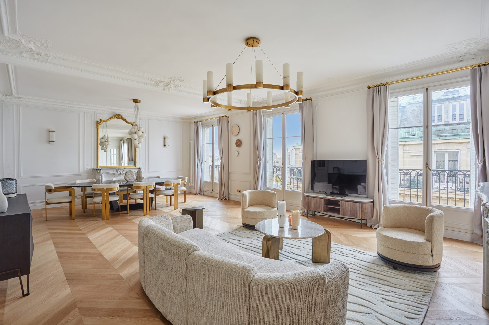
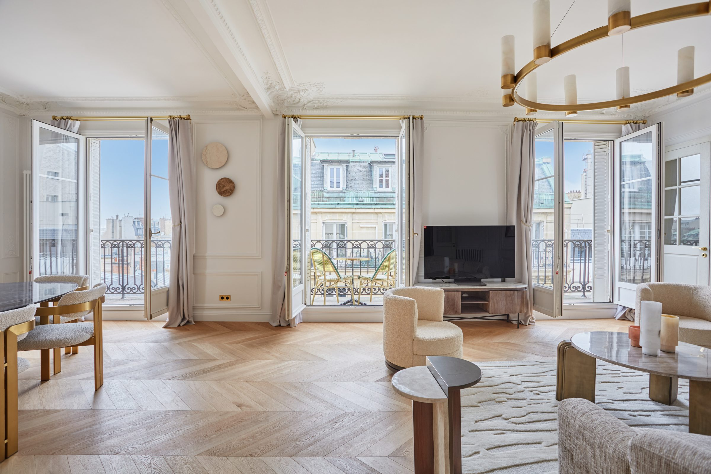
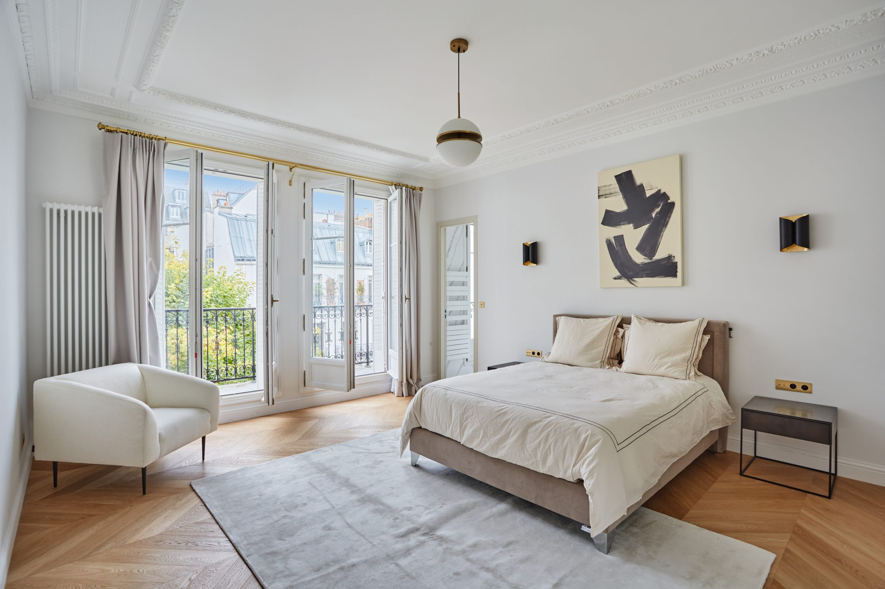
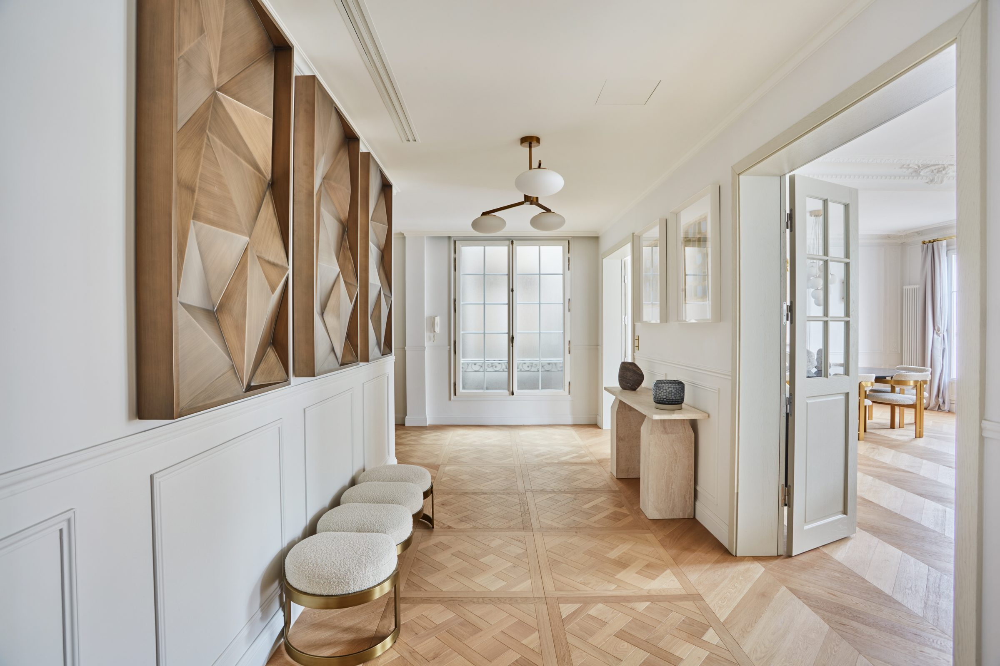
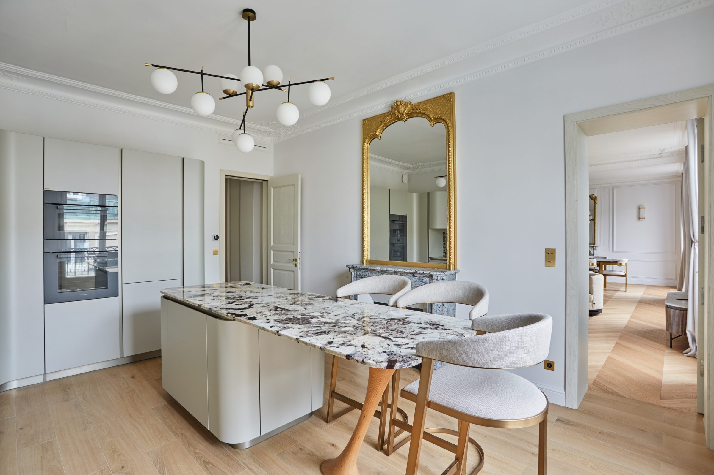
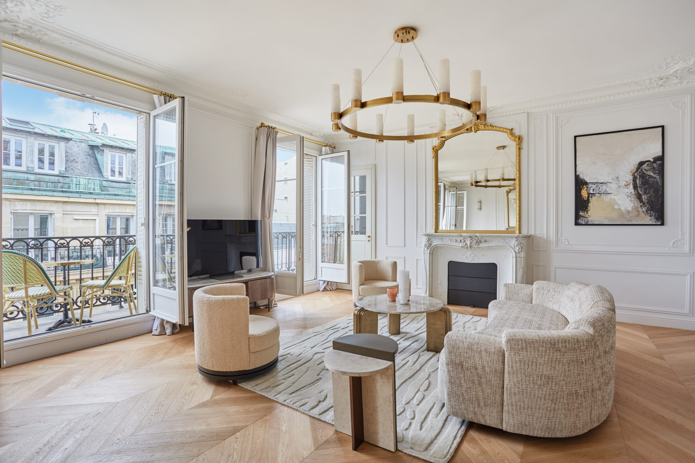
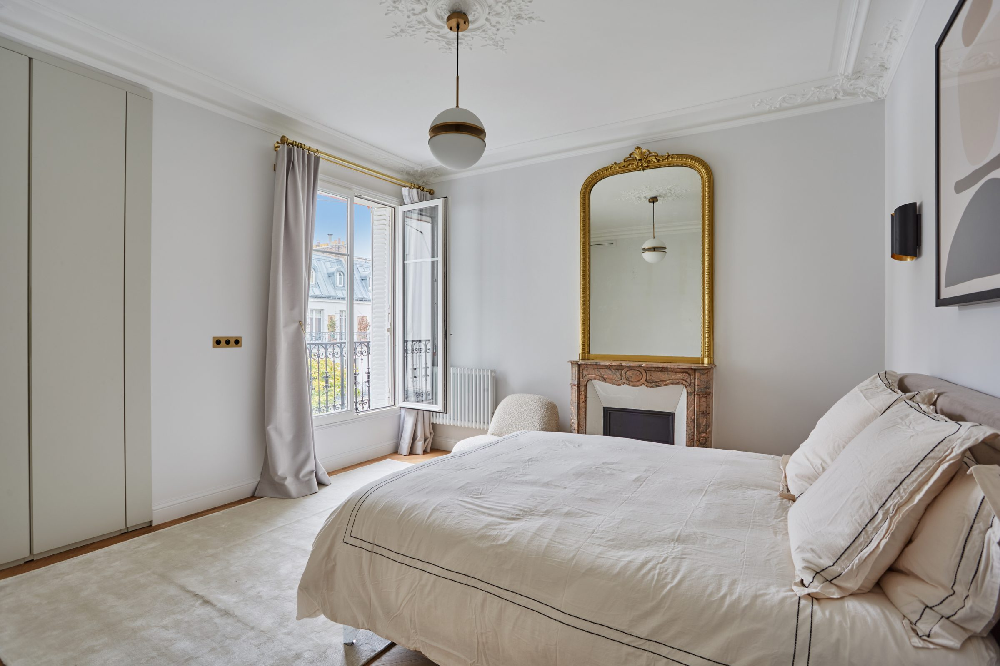
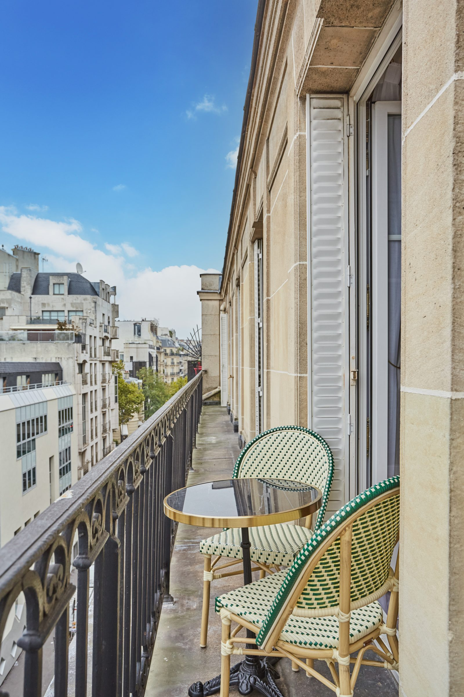
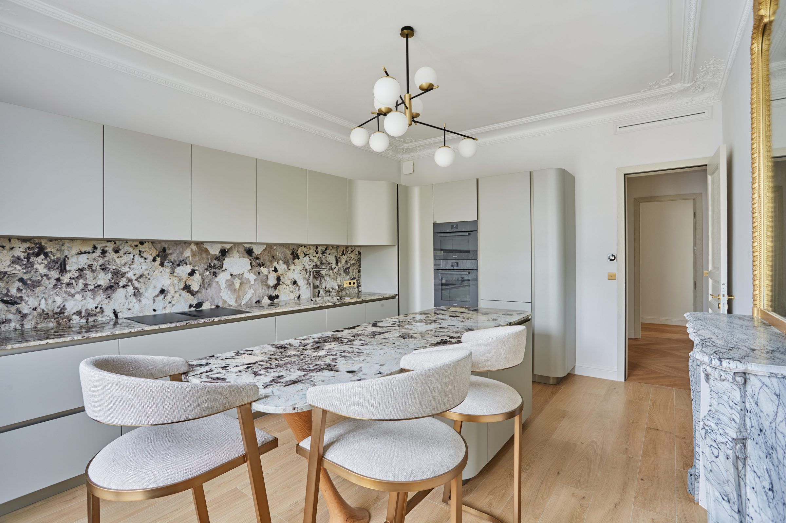
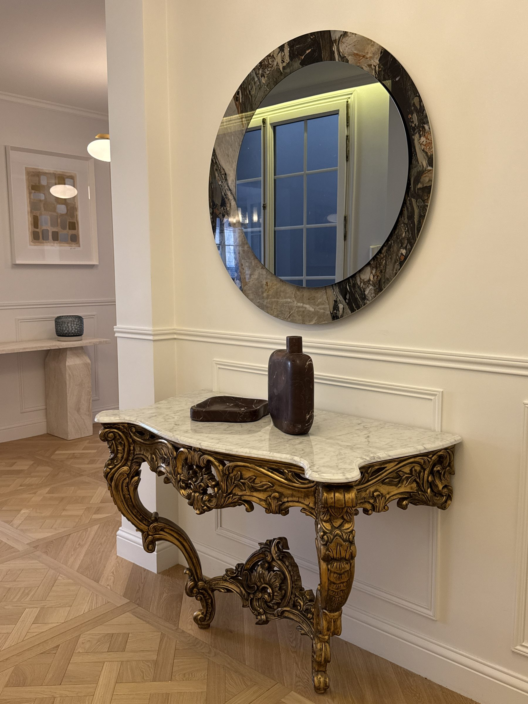

180 m² au cœur du 8ᵉ. Sept mois de chantier. Une famille qui voulait que l'appartement « ne soit plus le sien, mais le leur ».
Hélène et Pierre venaient d'acheter. Trois enfants, deux carrières, un appartement qui sortait d'une succession et qui n'avait pas bougé depuis 1978. Les volumes étaient là — quatre mètres sous plafond, enfilade plein sud, parquet d'origine — mais l'ensemble s'était recouvert d'une couche de modernité fatiguée que personne n'osait enlever.
Notre première décision fut de retirer. Pas d'ajouter — retirer. Faux plafonds, cloisons des années 80, cuisine fermée, moquettes dans les chambres. Sous la couche, l'appartement était déjà presque juste : il fallait l'écouter. Les moulures ont été restaurées plutôt que recoulées. Le parquet point de Hongrie a été poncé deux fois pour retrouver son veinage d'origine, puis huilé clair.
Le reste tient à quatre matières — travertin sur les sols d'eau, noyer fumé pour les bibliothèques et la cuisine, laiton patiné aux poignées et luminaires, lin écru aux rideaux — et à une seule règle tenue jusqu'à la dernière vis : ne jamais introduire un cinquième.







Faites glisser pour comparer. La photo « avant » date du compromis ; « après », trois jours après la remise des clés.

AvantAprès« On ne reconnaît pas notre appartement. Et pourtant, c'est plus que jamais le nôtre. »
— Hélène & Pierre, livraison juin 2024
